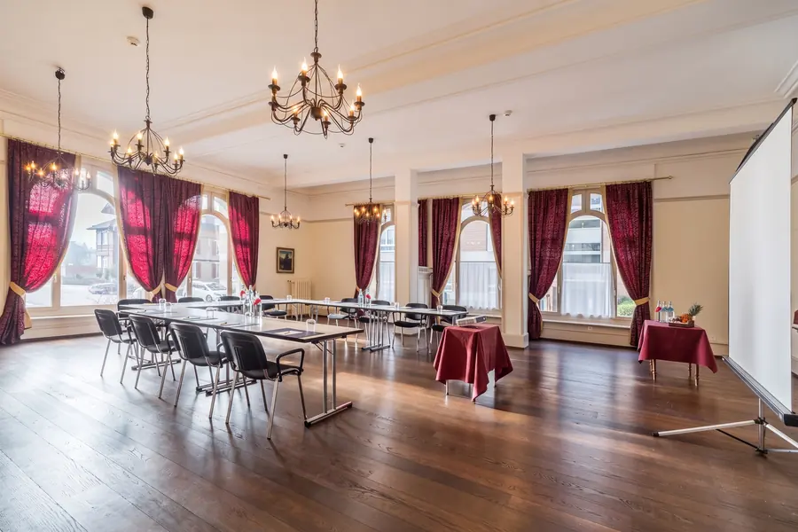
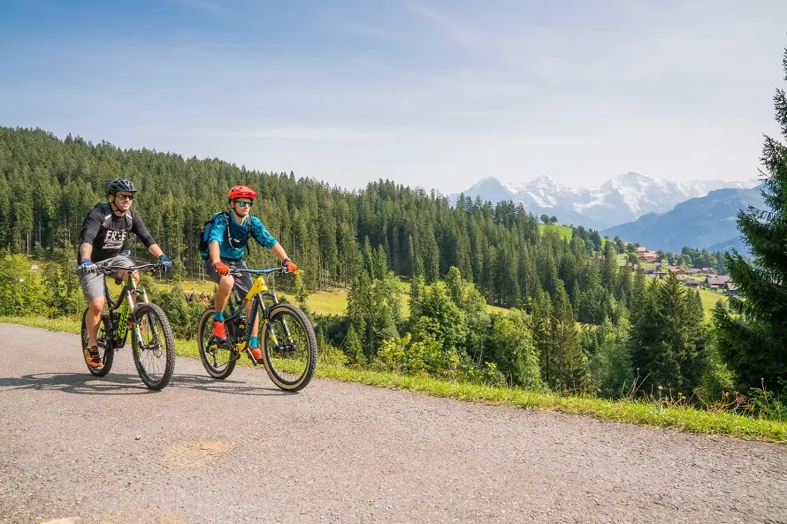
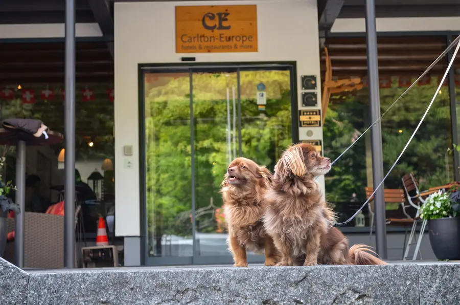
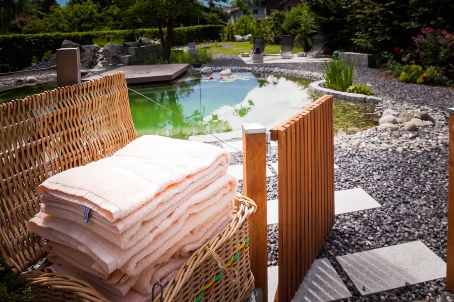
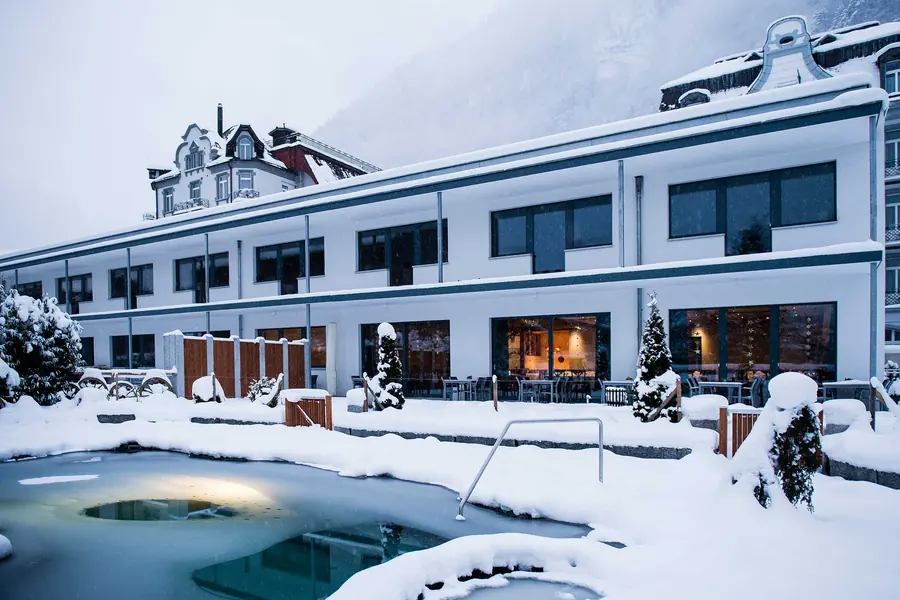
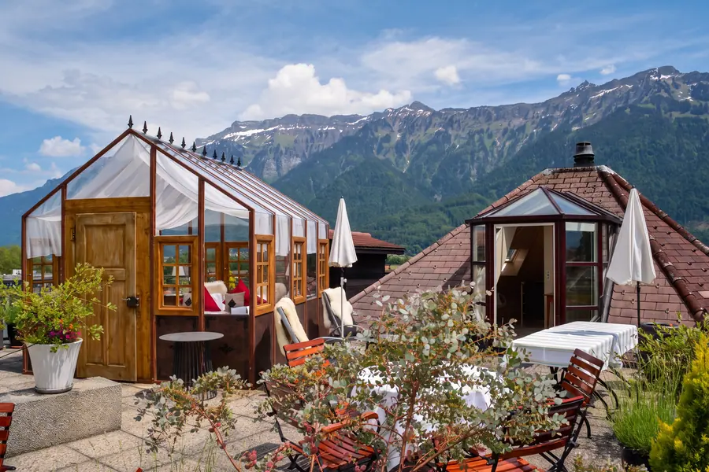
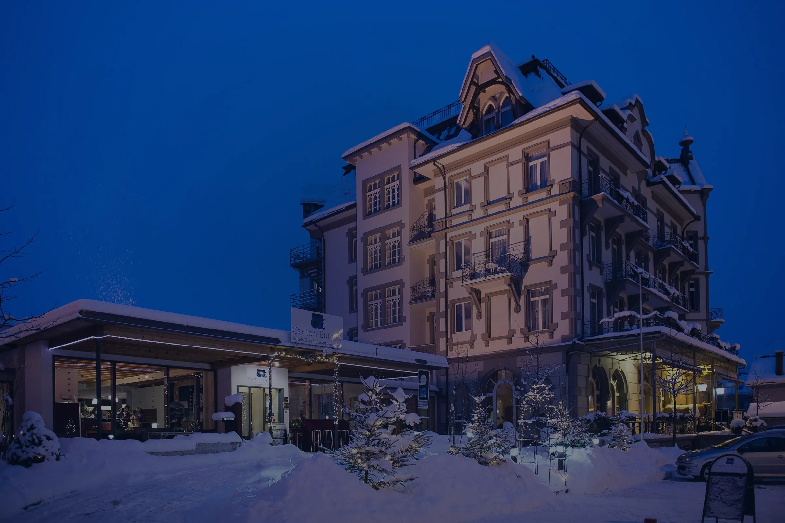

Carlton-Europe
Carlton-Europe


Carlton-Europe
Vintage Adults Hotel · Interlaken · depuis 1898
Les meilleures conditions en réservant en directRéception tous les jours de 7 h à minuit : +41 33 826 01 60
L’hôtelvintage.
Au Carlton-Europe, hôtel vintage pour adultes ouvert toute l’année et distingué de quatre étoiles par HotellerieSuisse, nous vous souhaitons une cordiale bienvenue en toute saison.

Merveilleusement situé près de la gare d’Interlaken Ost, avec vue sur le célèbre massif de la Jungfrau, les Alpes bernoises alentour et l’Aar au cours paisible. Depuis 2006, l’ancien hôtel Carlton et la Villa Europe ne forment plus qu’une maison.
Stephan JJ. Maeder& l’équipe du Carlton-Europe
 Toit-terrasse
Toit-terrasse Bar à cheminée
Bar à cheminée Parc de l’hôtel
Parc de l’hôtelDeux maisons,un hôtel.
Depuis 1898, les anciens hôtels Carlton (Brünig et l’Univers) et Villa Europe accueillent leurs hôtes.


Que veut direvintage ?
À l’origine, le millésime d’un bon vin. Aujourd’hui, des objets précieux venus de temps lointains.Beauxrêves.
Nous avons la chambre qu’il faut pour chaque hôte et chaque souhait. Chaque chambre est différente, aucune ne ressemble à l’autre.


Et quel oreiller vous ferait plaisir ?
Cinq garnitures au choix. Dites-nous avant votre arrivée quel oreiller doit se trouver sur votre lit.


De la chambrevers les montagnes.
Mit Blick aufs weltberühmte Jungfraumassiv, die umliegenden Berner Alpen und die gemächlich fliessende Aare.Qu’est-ce quivous amène ?
Le point de départ idéal pour des vacances dans la région de la Jungfrau et l’Oberland bernois, au bord du lac de Thoune et du lac de Brienz.
 De la romantique salle Art nouveau à la salle Hansen-Ritschard façon loft, mariages jusqu’à 120 invités, avec apéritif à la cave à vins ou sur la terrasse du toit.Fêter quelque chose
De la romantique salle Art nouveau à la salle Hansen-Ritschard façon loft, mariages jusqu’à 120 invités, avec apéritif à la cave à vins ou sur la terrasse du toit.Fêter quelque chose
Huit salles au rez-de-chaussée, forfaits séminaires dès CHF 75 par personne.Séminaires Une Signature Suite, du vin mousseux et un dîner aux chandelles : le forfait « Pretty Woman ».Se retrouver à deux
Une Signature Suite, du vin mousseux et un dîner aux chandelles : le forfait « Pretty Woman ».Se retrouver à deux Partez directement depuis l’hôtel. Le panier-repas est disponible dès CHF 19, la boîte petit-déjeuner pour les lève-tôt est gratuite.Randonnée
Partez directement depuis l’hôtel. Le panier-repas est disponible dès CHF 19, la boîte petit-déjeuner pour les lève-tôt est gratuite.Randonnée
Depuis 2018, l’un des premiers hôtels vélo de l’Oberland bernois, avec garage à vélos verrouillable, atelier et station de lavage.À vélo
Votre fidèle compagnon est le bienvenu en tout temps. Pour votre ami à quatre pattes, nous avons créé une carte rien que pour lui.Avec votre chienUne variété de plaisirs.
Savourez les délices des restaurants et des bars de la maison : le matin, notre copieux petit-déjeuner au restaurant de l’hôtel ; le soir, une cuisine suisse fraîche, des burgers maison ou un verre de vin à la cave.
- Restaurant de l’hôtel
- Hansen-Ritschard-Saal
- Cuisine suisse
- Chalet Beizli
- Burgers
- Asllani’s Corner
 Restaurant de l’hôtel
Restaurant de l’hôtel


Le petit-déjeuner, quand vous le souhaitez.
- de 7 h à 10 hDans votre chambre
- 10 h à 23 hCollation en chambre
- 23 h à 7 hLa boîte petit-déjeuner


Un apéritif dans la cave voûtée.
Notre Vintage Hotel raconte de nombreuses histoires passionnantes. Partout, vous découvrez des objets de musée qui rappellent l’époque de la fondation de nos hôtels. Le voyage dans le temps se termine dans la cave voûtée autour d’un bel apéritif régional.
- Disques vinyles
- plus de 200
- Tourne-disques
- certains centenaires
- Apéritif
- sous la voûte
Oberländer Wellnessdörfli.
Offrez à votre corps le repos qu’il mérite : un sauna finlandais classique, un sauna bio tout en douceur et un bain de vapeur purifiant, sans oublier les douches sensorielles et les bassins Kneipp. Le tout dans le style typique d’un chalet suisse.
Täglich 8 bis 22 UhrEintritt CHF 30Ab Superior inklusive
Bien-être & parc de l’hôtel




Top of Carlton.
Dîner au-dessus des toits.


6. Stock · Gebäude Carlton
Dînez à ciel ouvert sur l’une des plus belles terrasses sur le toit d’Interlaken ! Barbecue, fondue ou menu choisi : vous et vos invités n’oublierez pas cette soirée de sitôt, à deux comme en groupe.
BBQFondueMenu
- Vue
- Harder, Niesen, Jungfrau
- Brasero
- le soir


Votre grand
jour.
Célébrez votre grand jour chez nous, en petit comité ou en grand. Nos salles historiques accueillent jusqu’à 120 invités. Ajoutez-y un cocktail sur la terrasse du toit, un barbecue dans le jardin de l’hôtel ou la Feuerzangenbowle au bord de l’étang gelé.
Après la fête, personne n’a besoin de rentrer.

Sans doute la plus belleterrasse sur le toitd’Interlaken.
Stars Only : le pavillon résiste à l’hiver mais n’est pas chauffé. Bouillottes et couvertures en fourrure vous attendent.Forfaits& événements.
De l’automne doré à la nuit sous le ciel étoilé : nos forfaits du moment.
Deux nuitsMoments d’automne doréDeux nuits, un menu à trois plats et un billet journalier pour le funiculaire du Harder.Trois nuitsMoments vintageTrois nuits dans une Signature Suite, visite de l’hôtel comprise. Deux nuitsNouvel An 2026Deux nuits et un dîner de gala en sept plats.Une nuitStars OnlyUne nuit sous le ciel étoilé, sur la terrasse de la suite penthouse Aarmühle.
Deux nuitsNouvel An 2026Deux nuits et un dîner de gala en sept plats.Une nuitStars OnlyUne nuit sous le ciel étoilé, sur la terrasse de la suite penthouse Aarmühle. À deuxPretty WomanUne Signature Suite, du vin mousseux et un dîner aux chandelles.
À deuxPretty WomanUne Signature Suite, du vin mousseux et un dîner aux chandelles.Distingué par HotellerieSuisse.
Situation sur Booking.com.
L’un des premiers hôtels pour adultes et chiens de Suisse.
Ouvert en toute saison.

Offrez-vousune vraie détente.
Nous nous réjouissons de vous accueillir bientôt chez nous à Interlaken.
 AarAarHöhewegHarderGare d’Interlaken OstCarlton-Europe
AarAarHöhewegHarderGare d’Interlaken OstCarlton-Europe- Gare d’Interlaken Ost
- 200 mètres
- Réception
- de 7 h à minuit
- Situation sur Booking.com
- 9,5 sur 10